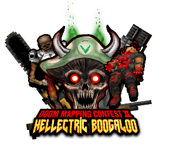

joel.wadjoel.wad, also know as "Satan's Asshole" is a Doom II WAD that was made by RenderError for the Vinesauce Doom Contest II: Hellectric Boogaloo.  The WAD was played by the contest runner, Joel Johansson (better known as "Vargskelethor") on the 11th of April 2018. Joel commented on the WAD by saying that "this didn't weight so much, I figured it as like 'babies first Doom map', but it's not that bad". In total the WAD is 840 KB (860,469 bytes), has 42 monsters, 1 secret, and 17 items. The WAD uses a MIDI version of Metallica's Master Of Puppets, from their third studio album, released in 1986 by Elektra Records, along with Master Of Puppets, the WAD also uses a MIDI version of "The Thing That Should Not Be", also from 1986's Master Of Puppets album. According to the game's title screen, the WAD is called "Satan's Asshole" has nothing to do with anything, "Wad has nothing to do with satan or his asshole it's just that i cannot think of a name". The WAD was made to be played in QZDoom, as it uses abilities that are not possible in the vanilla Doom engine (like using room-over-room). You may watch Vargskelethor playing the Doom WAD on YouTube.
References I. one https://rendererror.neocities.org/DOOM.html [Internet Archive] II. Download the WAD https://cdn.discordapp.com/attachments/431354073669959680/436942263906598912/joel.wad] This page was last updated: 27/06/2018 @ 00:10 In total this page has had 0 updates since it was uploaded.
|